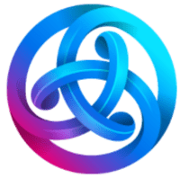

Welcome to House of Murasaki-san!
This is our fan project using Astar Network 
❤ News! ❤
We have released Murasaki-san LINE sticker and LINE emoji!
What's This? 🍀
House of Murasaki-san is a dApps game built on Astar Network. This fully on-chain game has a relaxed pace with low transactions and can be classified as an idle game or a pet simulation caring game.
Demo Preview is available for everyone. Meet developer's Murasaki-san and try Feeding them :)
This product can be used accross multiple platforms. You can play the game using EVM-compatible web browsers such as Chrome, Firefox, etc., on Windows or macOS with the Metamask plugin, or using the Brave browser on iOS or Android smartphones.
What's the Murasaki-san...?
One day, when I asked a friend to "create an original character that doesn't exist anywhere else," Murasaki-san was born on the edge of our sketchbook. As you may guess, the name Murasaki-san is quite unusual; Murasaki-san means "Mr. Purple" in Japanese. My friend first painted this little character purple so we could only call it murasaki-san and we finally ended up naming it "Murasaki-san", even though I think it's actually a little pink ;)
That's why we started creating on a game to move, take care of, and grow our Murasaki-san. It was just two weeks after the Astar Network launched and we wanted to build something fun on Astar chain. After about a year of development period, we are happy to launch our product on the Astar Network :)
Cheers to Astar and Murasaki-san.
 < cheers!
< cheers!
Change Log
# Change Log
All notable changes to this project will be documented in this section.
The format is based on [Keep a Changelog](http://keepachangelog.com/)
and this project adheres to [Semantic Versioning](http://semver.org/).
## [1.0.0] - 2023-XX-XX
### Released
- House of Murasaki-san was launched.
The Main Concept 🌸
Murasaki-san is the virtual pet that lives in your Astar EVM wallet. Murasaki-san is a Soulbound token (SBT), not an NFT. Only one Murasaki-san can live in a single wallet.
As time passes, Murasaki-san becomes hungry and lonely. As you attend to their needs by feeding and grooming them, they will gradually grow. By crafting various items together with your Murasaki-san, your House will become more vibrant and lively. Your Murasaki-san may even make a new friend along the way.
Murasaki-san and House of Murasaki-san take a long long time to grow. Please take it easy and watch over them.
Motivation:
Our main motivations for developing this project are:
How to Play 📘
- Summon your murasaki-san. Free trial are available.
- Care for your Murasaki-san by Feeding and Grooming them to gain EXP.
- Accumulate EXP to Level up your Murasaki-san.
- Your Murasaki-san can Mining to earn Coins or Farming to earn Leaves.
- You can Crafting item NFTs with your Murasaki-san by paying Coins and Leaves.
- Fluffy NFT will be awarded for certain actions and will settle into your house.
- You can buy and sell item NFTs on the Marketplace using $ASTAR.
- Your House of Murasaki-san will become more vibrant and lively as you continue to take care of your Murasaki-san attentively.

Make sure to feed your Murasaki-san twice a day and groom them at least once every three days to keep them healthy and happy :)
Cost to Play 💰
Trial Fee: *FREE*
After trial, Starting Fee: 500 $ASTR
All you need for a trial of the game is a small gas fee. Please feel free to try it out. If you enjoy the game, you can begin the main gameplay by paying the starting fee.
The trial period comes with the following limitations:
- Level cap is set at 4.
- Item crafting cap is set at 3.
- Resouse correcting cap is set at 3000.
- The Marketplace is unavailable.
It usually takes about 5-7 days of play time to reach these limits. Once the trial period is over, you can continue playing the game with no restrictions. All the status and NFTs you acquired during the trial period will be carried over to the main gameplay. The starting fee will gradually increase as the game economy grows. (For example, an expected 3% inflation after a month, which would be 515 $ASTR)
Aside from the Dapps Staking Bonus, we have not implemented any billing system that would impose additional costs affecting gameplay. If you want to buy or sell item NFTs on the Marketplace, you will need some $ASTR.
Attentions 🌟
Before starting the game, please take note of the following precautions:
- Murasaki-san is a SBT, not a NFT, so you can only summon once per wallet, and you cannot transfer or sell it. On the other hand, you can buy and sell crafted item NFTs.
- This project does not have plans for issuing a proprietary token. The coins and leaves obtained within the game are only usable within the game and do not follow the ERC-20 standard. $ASTR token is used for buying and selling of NFTs.
- If you neglect to take care of your Murasaki-san for a long time (about a month), Murasaki-san will become petrified, and you will need some additional cost to cure.
- Botting play using multi-wallets is profibited. You will be penalized for violating the anti-bot policy.
Dapps Staking Bonus! 🥳
--- We have not applied for Builder's Program yet ---
--- These bonuses might be active in the future ---
There are in-game bonuses depending on your dapps staking amount for this project.
- Get an extra presentbox every interval period. The higher the staking amount, the shorter the interval until the next gift.
- Some items change the picture or animation according to your staking amount. Observe carefully, or spoiled below.
The Murasaki-san living in the EVM wallet (Astar EVM address) linked with the Polkadot.js wallet (Astar Native address) that is staking on the House of Murasaki-san on the dapps staking can receive the above bonuses. You can link your Astar Native address and Astar EVM address on AstarPass.
Participation in dapps staking benefits both the individual and the product as a whole. Actually, 90% of staking rewards are spent on maintaining the product (see below for details; economy design).
Item Marketplace 🛒
Item and fluffy NFTs can be bought and be listed to sell on the Marketplace.
Item NFTs listed in the marketplace will be moved out of your house and will no longer have any effects while listed. Item NFTs purchased from the marketplace are immediately moved to your wallet and displayed in your house.
Currency and Fees:
- Token used for trading: $ASTR.
- Platform fee: 5%.
Market Rules:
- Wallets that have an active Murasaki-san SBT can use this marketplace.
- The Minimum listing price is set at the buyback price or 1.00 $ASTR, whichever is higher. The buyback prices for each item can be found in Buyback Market.
- Dutch auction mechanism: Items listed for less than 100 $ASTR will be pre-listed using the Dutch auction mechanism. The auction will start at a price of 100 $ASTR and will decrease to the listing price over a 24 hr period. The item will then remain at the listing price unless the owner unlists it.
And Then 💬
Here are some gameplay tips:
- At the time of leveling up, Murasaki-san's status points will increase depending on their behavior. For example, if your Murasaki-san spend more time mining, their strength will increase.
- The amount of EXP points gained by grooming depends on the amount of time your Murasaki-san did not work. This means that if you give your Murasaki-san a break from work, grooming will provide a lot of EXP points and help them level up faster.
- If you leave your Murasaki-san unattended for an extended period (aboun a month), they will become deeply disappointed and turn into stone. Once petrified, your Murasaki-san will be unable to do anything. To cure petrification, you will need to play an additional cost (currently set at the same price as the starting fee).
- If you want to reset the positions of items in your house, click:
Also see below for more detailed game specs.
Game Information 🌼
Current in-game parameters:
- Total trial Murasaki-san summoned:
- Total Murasaki-san summoned:
- Total item NFT minted:
- Current summon cost:
Realtime in-game logs:
Monitoring on-chain events here.
Visiting another house:
If you know friend's Murasaki-san ID, you can visit their house. You can feed their Murasaki-san and earn a little extra exp (2% of exp gained). However, you are not allowed to take any other actions in another user's house.
Murasaki-san ID:
Game Details 🔬
Actions
You can take care of your Murasaki-san with these actions.
 Feeding: Recover the satiety and earn some exp. You can feeding at anytime. Exp gained depends only on time.
Feeding: Recover the satiety and earn some exp. You can feeding at anytime. Exp gained depends only on time. Grooming: Recover the happy and earn some exp. You can grooming only when your Murasaki-san is not working. Exp gained depends on not-working time.
Grooming: Recover the happy and earn some exp. You can grooming only when your Murasaki-san is not working. Exp gained depends on not-working time. Level-up: You can level-up your Murasaki-san when the exp bar is accumulated. Status points will increase depends on the behavior of your Murasaki-san.
Level-up: You can level-up your Murasaki-san when the exp bar is accumulated. Status points will increase depends on the behavior of your Murasaki-san. Mining: Working to earn Ohana coin. Coin gained depends on mainly Strength. Lv 2 is required.
Mining: Working to earn Ohana coin. Coin gained depends on mainly Strength. Lv 2 is required. Farming: Working to earn Kusa material. Material gained depends on mainly Dexterity. Lv 2 is required.
Farming: Working to earn Kusa material. Material gained depends on mainly Dexterity. Lv 2 is required.- Crafting: Working to mint items (NFT). Coins and Leaves are needed to start crafting. Time needed to complete depends on mainly Intelligence. Lv 3 is required.
Status
| Discriptions | |
|---|---|
| Affects almost all action efficiencies. Increases by level-up. | |
| Need to level-up. Can be earned by feeding and grooming. | |
( |
Affects mining efficiency. Increases by level-up and crafted items. |
( |
Affects farming efficiency. Increases by level-up and crafted items. |
( |
Affects crafting efficiency. Increases by level-up and crafted items. |
( |
Affects critical judgment. Increases by level-up. Critical success: earning x2 coin/material in mining/farming; crafting rare items; earning x2 exp in feeding/grooming. |
| Decreases over time and reaches 0% in 12 hours. Be recovered by feeding. When below 20%, your Murasaki-san can not start new working. | |
| Decreases over time and reaches 0% in 72 hours. Be recovered by grooming. When below 20%, your Murasaki-san can not start new working. | |
| The fluffy score reflects the current amount of fluffies in your house (Fluffy: +2, Fluffier: +12, Fluffiest: +50, Fluffy doll: +152 per one). Your Murasaki-san's luck increases 0.01 per one fluffy score. |
Items
Crafting items require costs and time. Items increase status point and make your house more lively.
>> All craftable item details are found in here <<Item Rarity and Upgrading
- There are three levels of rarity: common, uncommon, and rare. Uncommon items provides a status boost of 1.5x compared to common items, while rare items provides a boost of 2.0x.
- If you have more than two items with the same name and rarity, the second and subsequent items will only provide an additional status boost of 0.1x.
- You can mainly obtain common items by completing crafting, and occasionally, if you're lucky, you may receive uncommon items. However, rare items are never minted by crafting.
- To upgrade an item from a lower rarity to a higher rarity, you need to burn three items with the same name and rarity. For instance, you can burn three common violins to obtain one uncommon violin.
- To upgrade from common to uncommon, 200 coins and 200 leaves are needed. To upgrade from uncommon to rare, 400 coins and 400 leaves are needed. Upgrading is completed immediately and does not require any crafting time.
About Fluffy
Fluffy is a small housemate in your house who dreams of becomming Murasaki-san. The more fluffies that live in the house, the more luck your Murasaki-san will have (One fluffy score is equivalent to +0.01 LUK). You can upgrade your fluffy from a lower level to an upper level by burning fluffies of the same color.
By opening the present boxes, you will get a random color of fluffy. You can receive the present box in the following situations: crafting bonus (when Murasaki-san completes crafting an item, a random Murasaki-san will receive a present box), cat-mail bonus (when your Murasaki-san open a cat-mail, both the sender and recipient will receive a present box), festival participation bonus (your Murasaki-san receive a present box by voting during the Fluffy Festival. The first voter and the last voter can receive an additional one), dApps staking bonus (depending on your dapps staking amount, you can receive fluffy once every 7-30 days).

Fluffy: It's a smallest fluffy. You can mainly obtain it by opening present boxes. There are a total of 12 colors available (gray , beige, limegreen, lightblue
, beige, limegreen, lightblue , blue
, blue , purple, redpurple
, purple, redpurple , red, orange
, red, orange , pink
, pink , yellow, white). Fluffies love Murasaki-san and dream of becoming like Murasaki-san. By collecting five fluffies of the same color, you can upgrade them to a slightly larger fluffier.
, yellow, white). Fluffies love Murasaki-san and dream of becoming like Murasaki-san. By collecting five fluffies of the same color, you can upgrade them to a slightly larger fluffier.
Fluffier:  It's a little bigger fluffy. You can mainly obtain it by upgrading fluffies. They are cherished, and their sense of self has started to blossom. By collecting four fluffiers of the same color, you can upgrade them to a larger fluffiest.
It's a little bigger fluffy. You can mainly obtain it by upgrading fluffies. They are cherished, and their sense of self has started to blossom. By collecting four fluffiers of the same color, you can upgrade them to a larger fluffiest.
Fluffiest:  It's a biggest fluffy. You can mainly obtain it by upgrading fluffiers. They have been cherished so much that they have gained the ability to move around on their own. By collecting three fluffiests of the same color, you can upgrade them to a fluffy doll.
It's a biggest fluffy. You can mainly obtain it by upgrading fluffiers. They have been cherished so much that they have gained the ability to move around on their own. By collecting three fluffiests of the same color, you can upgrade them to a fluffy doll.
Fluffy Doll:  The dreams of the fluffies have finally come true! It's a fluffy, coveted plush doll that looks just like Murasaki-san. It is crafted by upgrading three fluffiest of the same color. The Fluffy Doll possesses a mysterious ability and provides an exp boost bonus when placed in the house. The Fluffy Doll retains the comfort score of the house at the time of its creation, and the smaller the score of the house where it is placed, the greater the exp boost it provides. This functioins as a kind of relief mechanism for latecomers. If your friends start a new House of Murasaki-san, lending them your favorite Fluffy Doll will help their Murasaki-san's growth a lot.
The dreams of the fluffies have finally come true! It's a fluffy, coveted plush doll that looks just like Murasaki-san. It is crafted by upgrading three fluffiest of the same color. The Fluffy Doll possesses a mysterious ability and provides an exp boost bonus when placed in the house. The Fluffy Doll retains the comfort score of the house at the time of its creation, and the smaller the score of the house where it is placed, the greater the exp boost it provides. This functioins as a kind of relief mechanism for latecomers. If your friends start a new House of Murasaki-san, lending them your favorite Fluffy Doll will help their Murasaki-san's growth a lot.
About Flower Wreath and Exp Boost

By crafting and placing a flower wreath in the house, it activates an exp boost bonus that reflects the on-chain activity of the players's wallet. The exp boost rate increases based on the number of token types owned in the wallet, the number of NFT types owned in the wallet, and the dApps staking amount for this project.
This is an experimental initiative aimed at increasing the on-chain activity of the Astar wallet and fostering interaction between projects on the Astar chain. While the bonus values obtained may not be significant, they are a valuable element as there are few other means to increase exp efficiency. Wallets with high activity on Astar Network will receive stronger bonuses.
Corresponding tokens are: $ACA, $ASTR, $BNB, $BTC, $BUSD, $DAI, $DOT, $ETH, $GMLR, $KSM, $LAY, $MATIC, $SDN, $USDC, $USDT
Corresponding NFT projects are: AstarDegens, CandyGirl, AstarCats, AstarPunks, HEALTHREE
The step of Staking amount: 500, 1000, 2000, 4000, 8000, 16000, 32000, 64000, 128000, >128000 $ASTR
If a player has one or more tokens/NFTs of a specific type in the wallet, the player will receive an exp boost bonus of +0.1% for each of that type. In token category, the boost bonus is valid as long as the player holds more than zero tokens (it does not have to be in denominations of 1 currency, for example, 1 $BTC). In NFT category, having two ore more NFTs from the same project does not increase the exp boost bonus. In staking category, by staking an amount equal or greater than each step, the player can increase the bonus by an additional +0.1% per step. The exp boost bonus values do not exceed +1% in each category (maximum +1% for tokens, maximum +1% for NFTs, maximum +1% for staking).
The eligible types of tokens and NFTs may be subject to additions and modifications in the future. Additionally, when this project issues its own original NFTs, holding them will provide an exp boost bonus as a separate category.
About Cat-Mail

Cat-mail is one of the mechanisms to obtain present boxes. It is unlocked when you have the Cat Cushion in your house.
in your house.
By crafting cat-mail (which requires a cost of 100 coins and 100 leaves) and having it in your house, you can send cat-mail to a random recipient by clicking on your cat. A cat with the mail will appear in the recipient's house, and the recipient can click to open the mail. When the cat-mail is opened, present boxes are sent to both the sender and the recipient.
(which requires a cost of 100 coins and 100 leaves) and having it in your house, you can send cat-mail to a random recipient by clicking on your cat. A cat with the mail will appear in the recipient's house, and the recipient can click to open the mail. When the cat-mail is opened, present boxes are sent to both the sender and the recipient.
Once a cat has sent out with mail, it becomes tired and will sleep even when it returns to your house. After 7 days from the sending date, your cat will wake up and be able to send mail again.
The cat tries to visit a well-cared Murasaki-san ( satiety >30% and
satiety >30% and  happy >30%). If a suitable Murasaki-san is not found, the cat may occasionally get lost, but it will safely return your house after 7 days.
happy >30%). If a suitable Murasaki-san is not found, the cat may occasionally get lost, but it will safely return your house after 7 days.
Only one cat can visit at a time in the house, and two cats will not visit the same house (although your cat and a visiting cat from someone else can be in the your house at the same time).
Having the cat cushion is necessary to send cat-mail, but even if you don't have a cat cushion, someone's cat may visit your house. Visiting cats will stay in your house for a maximum of 7 days. Please make sure to open the cat-mail without missing it.
About Strolling -comming soon-
comming soon.
About Practicing -comming soon-
comming soon.
More Details 🧬
Contracts
The project is currently implemented as a complex set of contracts consisting of one NFT contract, two SBT contracts, five storage contracts, seven function contracts, and several add-on contracts.
Here is an overview of each contract:
 Abbreviations: mfs:Murasaki_Function_Share, mfcc:Murasaki_Function_Crafting_Codex, ma:Murasaki_Address, mp:Murasaki_Parameter, mffg:Murasaki_Function_Feeding_and_Grooming, mfmf:Murasaki_Function_Mining_and_Farming, mfsl:Murasaki_Function_Summon_and_Levelup, mmp:Murasaki_Music_Practice, mfc1:Murasaki_Function_Crafting1, mfc2:Murasaki_Function_Crafting2, mfn:Murasaki_Function_name, mss:Murasaki_Storage_Score, ms:Murasaki_Storage, msn:Murasaki_Storage_Nui, mm:Murasaki_Main, mc:Murasaki_Craft, mn:Murasaki_Name, market:Murasaki_Market_Item, mav:Murasaki_Achievement, uri:Murasaki_tokenURI, mml:Murasaki_Mail, md:Murasaki_Dice, mst:Murasaki_Staking, ll:Murasaki_Lootlike, ff:Fluffy_Festival, st:Strolling, info:Murasaki_Info, Murasaki:Murasakisan
Abbreviations: mfs:Murasaki_Function_Share, mfcc:Murasaki_Function_Crafting_Codex, ma:Murasaki_Address, mp:Murasaki_Parameter, mffg:Murasaki_Function_Feeding_and_Grooming, mfmf:Murasaki_Function_Mining_and_Farming, mfsl:Murasaki_Function_Summon_and_Levelup, mmp:Murasaki_Music_Practice, mfc1:Murasaki_Function_Crafting1, mfc2:Murasaki_Function_Crafting2, mfn:Murasaki_Function_name, mss:Murasaki_Storage_Score, ms:Murasaki_Storage, msn:Murasaki_Storage_Nui, mm:Murasaki_Main, mc:Murasaki_Craft, mn:Murasaki_Name, market:Murasaki_Market_Item, mav:Murasaki_Achievement, uri:Murasaki_tokenURI, mml:Murasaki_Mail, md:Murasaki_Dice, mst:Murasaki_Staking, ll:Murasaki_Lootlike, ff:Fluffy_Festival, st:Strolling, info:Murasaki_Info, Murasaki:Murasakisan
The solidity code for each contract can be referenced here. The latest address of each contract is storaged in the Murasaki_Address contract.
All contracts are linked and managed through the summoner ID assigned to the Murasaki-san SBT. Function contracts are individually replaceable, and bug fixes, balance adjustments, and other game upgrades can be implemented by replacing or updating them. Add-on contracts are created as needed when adding new features for the gameplay.
Due to the complexity of the project's contract system, a viewer contract has been prepared to provide convenient access to major parameters of Murasaki-san. The viewer contract follows the concept of web3 and is available for anyone to use without any permissions. It is also designed to be referenced in the future endeavors, such as the upcomming next product that we plan to create using WASM. For more detailed information about the viewer contract, please refer to the "For the Developers" session.
Calculation Formulas
The calculation formula regarding the effect of each status value on the results of each action is as follows:
Feeding efficacy:
Exp Gained = (500 * (100 - Satiety) / 100) * ExpBoost
ExpBoost = Boost_from_FlowerWreath * Boost_from_FluffyDoll
Grooming efficacy:
Exp Gained = (3000 * (100 - Happy * Coefficient) / 100) * ExpBoost
ExpBoost = Boost_from_FlowerWreath * Boost_from_FluffyDoll
Coefficient = (Now - LastGroomingTime - WorkingTime) / (Now - LastGroomingTime)
Working: Mining, Farming, Crafting, Strolling, Practicing
Mining efficacy:
Mining Coins = (SEC / 86400 * 1000) * ( 1 + (STR + Lv + STR_item) * 5/100 )
Farming efficacy:
Farming Leaves = (SEC / 86400 * 1000) * ( 1 + (DEX + Lv + DEX_item) * 5/100 )
Crafting efficacy:
Crafting Sec = item_DC * (INT + Lv + INT_item - 400) / (item_Lv * 300) * 86400 / 1000
Crafting Sec >= [Sec Limit set for each item]
Critical efficacy:
Conditional Expression: D100 <= LUK + FluffyScore/100 + RolledDice/10
Success: gain x2 Exp, earn x2 Coin/Leaf, craft uncommon item
Next exp required
The following exp point table has been set based on the Dungeons & Dragons 3.5 rulebook. Upon leveling up, all exp points are paid and reset to 0.
| Exp required to level-up | |
|---|---|
| 1000 | |
| 3000 | |
| 6000 | |
| 10000 | |
| 15000 | |
| 21000 | |
| 28000 | |
| 36000 | |
| 45000 | |
| 55000 | |
| 66000 | |
| 78000 | |
| 91000 | |
| 105000 | |
| 120000 | |
| 136000 | |
| 153000 | |
| 171000 | |
| 190000 | |
| ------ |
Buyback Treasury
The buyback system was designed to ensure that players can sell the NFTs of this project to the treasury at a fixed price at any time, thus constantly guaranteeing the asset value of the NFTs in this project.
The developers believe that continuing to play the game solely for monetary gain can be somewhat burdensome. Lucky players may be able to sell their earned NFTs at a high price and make some profits. However, this can create temporary and sometimes harmful bubbles, disadvantaging unlucky players or latecomers.
On the other hand, the developers also understand the enjoyment of having NFTs with asset value.
To improve on this goal, the developers have implemented an automated buyback system in this project. Approximately half of the starting fee paid by the player is immediately sent to the buyback treasury. Players can receive a fixed-price buyback at any time by burning the NFTs of this project. Item NFTs that require more resources to craft in the game are assigned higher buyback prices. Additionally, the buyback prices set for each item gradually increase over time.
Buyback price calculation:
Price = Resource / 1074560 * AmountPerPlayer
Resouce = [The sum of coins and leaves required for crafting]
AmountPerPlayer = [Set at 45% of the starting price and increasing]
In other words, the minimum price of each NFTs in this project is determined, and this minimum price (buyback price) never decreases but always increase over time. With each acquisition of NFTs through ongoing gameplay, the player's asset value increases steadily, and it also continues to increase by holding the NFTs. Since the buyback treasury always holds enough to buyback all items from all players, there will never be a situation where the reasury runs out and later players cannot receive buybacks.

Regarding the rate of increase in the buyback price, developers plan to tradually raise it, but developers don't have specific calculations for the appropriate rate of increase at the moment. The buyback price will increase faster as additional funds flow into this project (see the Economy Details session). As an example, developers are considering a rate of increase of approximately 1-3% per month. Additionally, if there are many dropout players who have stopped playing the game, the buyback prices for players who continue to play will be more likely to increase (the buyback tokens allocated for dropout players will be reallocated to the remaining players). On the other hand, interestingly, a large influx of new players is expected to make it difficult to increase the buyback price (as the buyback price is equivalent ot the new inflow value divided by the total active players).
Of course, all players have the option to sell NFTs on the marketplace insted of burning them in the buyback system. It is likely that players can sell NFTs at higher prices on the marketplace compared to buyback price. The buyback system can be seen as a defensive mechanism to prevent the price of NFTs from plummeting in case there are no buyers.
This buyback system is somewhat experimental, and its acceptance by players will only be known after it has been operational for a while. The developers will continuously explore areas for improvement.
Economy Details
Here is an overview of token currency:
Why Astar?
Astar is a highly promising and excellent blockchain. The developers have chosen Astar as the launch platform for this project primarily for the following reasons:
dApps Staking:
The developers can focus on the project's development without worrying about financial sustainability, if their project were adopted for dapps staking. On the player's side, they can support the project financially without exposing their assets to hacking risks or depleting them by excessive purchases of the project's NFTs or tokens. In this project, players engaging in dapps staking are rewarded with in-game incentives, allowing both the project and players to benefit from low-risk profit. In other words, players who are fond of this project and want to play more efficiently have an incentive to stake more assets in dApps staking. This incentivizes the project's developers strive to make development that encourage players to stake more funds in dApps staking. To our knowledge, Astar Network is the first to advocate for this excellent mechanism.
Cross-Virtual Machine (XVM):
By utilizing XVM, the developers will have the freedom to seamlessly interoperate between EVM (Ethereum Virtual Machine) contracts and WASM (WebAssembly) contracts, allowing for future compatibility. Currently, EVM benefits from excellent libraries and development knowledge. However, in the near future, within a few years, WASM is expected to become a core technology in Web3. We believe that Astar chain, with the availability of XVM, is the only platform that enables a seamless shift of development resources from EVM to WASM. One of our main goals is to constantly keep up with the latest technologies in web3. For our next season project, we aim to leverage the assets of this EVM-based project while developing on a WASM basis, and Astar Network is the only platform that allows for such development possibilities.
Low Gas Fee:
When developing a fully on-chain game, the low cost of gas fee is extremely important. Currently, Astar chain maintains very low gas fees, allowing players to engage in gameplay with minimal concerns about gas costs, even for transactions involving relatively complex operations.
Top of the Polkadot Parachains:
We strongly believe in the future interoperability brought by Polkadot and parachains. Based on the three reasons mentioned above, we are confident that Astar Network is currently the most suitable environment for project development among the parachains of Polkadot.
Cheers to Astar :)
For the Developers 🛠
We have prepared a contract that enables anyone to access information about Murasaki-san in this project. Although the contracts in this project are complex, you can access the major information using this contract. Consistent with web3 principles, the information within this contract is free to use without requiring any permissions.
- Contract Address: 0x31d69b5125ce419a2948a58b7Aa0883D57c06850
- Contract ABI: abi_Murasakisan.json
- Contract interface: IMurasakisan.sol
With this contract, you can obtain status values of user's Murasaki-san such as Level, Age, Name, STR, present satiety, score, total_leaves_farmed, total_item_crafted, and more, using user's wallet address. This contract also meets the criteria for ERC165 and ERC721 standards and is compatible to Metamask etc, although transfers are not allowed since the Murasaki-san tokens are SBT.
This contract enables you to integrate Murasaki-san's information into your web pages or contracts. For example, you can display the name and the other status of the Murasaki-san associated with a connected wallet on your web page.
The example JavaScript code used can be found here. Other informations available in the contract can be found in the interface file described above.
Please feel free to use it :)
Future Plan ⏳
Just after launch:
Our priority is to control inflation rate and keep the game going.
- Fixing bugs.
- Improving UI details.
- Correcting typo and misspelling.
- Controling inflation rate of buyback system.
After that:
The project will move to the next season in a couple of years.
It takes at least about two years for House of Murasaki-san to reach maximum growth. Over this two years, we plan to create the next product which uses the information of the Murasakisan contract descrived above. Since Astar Network supports both EVM and WASM, so we plan to use Rust to create our next product on WASM, and interacting with House of Murasaki-san on EVM via XVM (Well, the coder is enjoying learning Rust & ink! now).
The concept of the next product is still undecided yet, but we would like to make a work related to the travel. Actually, the last items Murasaki-san can craft are related to travel.
One day, a grown your Murasaki-san may set off on a journey with their friends from your house.
Abount security:
All parameters and status of NFTs and SBTs in this project are recorded on Astar chain. Some solidity codes, which are only allowed to be used by the administrator wallet, have a mechanism that can be used to rewrite user states, but at this time we believe it is necessary for game balance adjustment, bug fixes, contract upgrades, and anti-bots.
These permissions are only granted to the following administrator wallet:
0x6655B97171c8FA7dF052D95230951E80c5cB7e15
After this product is sufficiently stable, we plan to gradually renounce ownership of each contract.
About Us 🌺
We are supporters, diamond handers, and hodlers of the Astar Network ecosystem and the Polkadot union. In late 2021, we also participated in the Astar parachain auction. This is our first fan product using the Astar blockchain. Although we are a small team and only work on the weekends, our production concept is simple:
"to create a product that we ourselves also enjoy playing"
We hope you enjoy it too :)
- The coder: degupoppo🐀 (wallet: 0x2F7448B62134e52C2f46454d0089Ae21B5248805)
A hobby coder with lots of typos who loves rodents like degue.
- The illustrator: fumacist🐈 (wallet: 0xe79d44309e4daD2CD7eaf3CA4CD1d80a6b8733f7)
A whimsical hobby illustrator who loves cats and fluffy dolls.
Any donation is greatly appreciated. The donations will be used to buy some coffee for the coder, pay for drawing software and Apple Pencil for the illustrator, and purchase fluffy wool for Murasaki-san ;)

Terms of Service 🤖
All materials, information, products, software, programs, and services are provided "as is," with no warranties or guarantees whatsoever. We expressly disclaims to the fullest extent permitted by law all express, implied, statutory, and other warranties, guarantees, or representations, including, without limitation, the warranties of merchantability, fitness for a particular purpose, and non-infringement of proprietary and intellectual property rights. Without limitation, we makes no warranty or guarantee that this web site will be uninterrupted, timely, secure, or error-free.
Terms of financial assets:
- It is prohibited to use NFTs from this project as a means of payment to unidentified individuals for any goods or services.
- The maximum mint limit for each item type of NFT is set at 900,000 and will not exceed 1,000,000.
- The mint price (starting price) for unlimited SBT will be adjusted to never fall below $10 in US dollars.
- Holding NFT or SBT of this project does not entitle users to any financial asset diviends directly.
- There are currently no plans to issue any cryptocurrency tokens following the ERC-20 or equivalent standard for this project.
- This project is an experimental endeavor in Web3, and its primary goal is not profit-oriented. The developers receive a 10% donation from the tokens paid by users as a game fee and reward from dapps staking. The developers do not have ownership over the remaining 90% of the assets, which are either staked or held on the blockchain.
- This project does not have any "operators" or "managers" who engage in ongoing operational or managerial tasks. All program operations are automatically executed by on-chain smart contracts.
- The above terms and conditions are subject to change in the event of tax regulation modifications or project transition to the next season.
Anti-bot policy:
Violating these policies may result in penalties.
- Having two or more characters per player is prohibited.
This project assumes one character per player. Owning multiple characters simultaneously or using multi-wallets for botting is prohibited. To ensure fair gameplay, having two or more characters per player or per node may result in penalties. - Too many direct smart contract interactions are prohibited.
Although this game is fully on-chain and it is enable to interact with the smart contracts directly, excessive direct interaction that negatively impacts the ecosystem or other players' gameplay is strictly prohibited. On the other hand, there are no restrictions on calling the Murasakisan contract. - Any other activity determined to be harmful are prohibited.
Actions that rovides a obvious advantage over regular gameplay and the development team deems harmful to the ecosystem, such as scripting, automation, front-running, or sniping can result in penalties.
Privacy policy:
The privacy policy for this product can be found here.
Acknowledgments ✨
We would like to express our thanks to followings:
- Excellent game framework from Phaser3.
- Useful sound effects from Kokaon Lab and OtoLogic.
- Wealthy illustrations from Irasuto-ya.
- Great musics from DOVA-SYNDROME.
- Excellent CSS framework from Simple.css.
- Enhanced drawing environment from ibisPaint.
- Some Solidity codes and really good inspiration from Rarity by Andre Cronje.
- Amazing development environment and testnet from Astar Network
- The exciting future vision presented by Sota Watanabe and all the Web3 contributors including you425, as one of the best Astar Ambassadors.